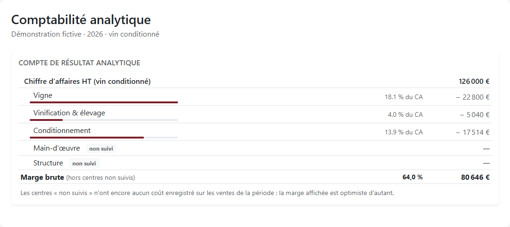

Comment calculer le coût de revient réel d'une bouteille de vin ?
Une bouteille ne coûte pas seulement du raisin, du verre et un bouchon. Elle porte aussi les heures de chai, l'élevage, les litres perdus et une part des charges du domaine. Pour calculer son coût de revient, il faut suivre ces dépenses jusqu'au nombre de bouteilles réellement disponibles.
La méthode en trois opérations
- Définir le périmètre : une cuvée, un millésime, un format et un circuit de vente.
- Cumuler les coûts attribués au lot, puis les diviser par son volume utilisable à chaque étape.
- Ajouter le conditionnement et les frais retenus par bouteille, sans compter deux fois une même charge.
Quel coût de revient cherchez-vous ?
Le coût de revient d'une bouteille de vin rassemble les coûts nécessaires pour la produire et la vendre, selon un périmètre explicite. Un montant « départ cave », avant transport et commission, ne se compare pas directement au coût d'une commande livrée à un particulier. Inscrivez cette frontière en tête du calcul.
- Coût direct : dépense attribuable au lot sans clé de répartition, comme une analyse identifiée ou les bouchons consommés à sa mise.
- Coût de production : raisin, transformation et charges de production attribuées au vin, jusqu'au stade choisi : vrac après élevage ou bouteille conditionnée.
- Coût complet : méthode intégrant les charges directes et une part des charges indirectes dans le périmètre retenu.
- Coût de revient : coût du produit incluant aussi les frais nécessaires à sa commercialisation. S'ils restent à ajouter, nommez votre résultat « coût avant frais de circuit ».
Cette décomposition par étapes rejoint le Référentiel économique du vigneron 2025-2027 des Chambres d'agriculture, qui distingue raisin, vinification, conditionnement et mise en marché. Ses hypothèses décrivent un système viticole donné : elles ne constituent pas un tarif universel de la bouteille.
Ce guide calcule un coût économique de gestion. Il ne donne pas une valeur de stock à recopier au bilan. Le Plan comptable général, articles 213-30 à 213-32, encadre les coûts incorporables aux stocks, exclut pertes et gaspillages et prévoit une affectation des frais fixes fondée sur la capacité normale. Le tableau de gestion ci-dessous suit, lui, la dépense supportée par la cuvée et ses volumes vendables.
Recenser les coûts de la vigne à la mise
Raisin et vendange : choisir une seule porte d'entrée
Pour du raisin acheté, partez de la facture nette des remises et ajoutez les frais d'approvisionnement supportés. Pour votre récolte, reconstituez le coût des parcelles concernées : travaux, fournitures, mécanisation, fermage éventuel et usage des équipements. Le raisin du domaine n'est pas gratuit. Attribuez ensuite ce coût aux lots issus des parcelles, avec une règle documentée.
La vendange comprend la récolte, le transport et, selon l'organisation, le tri. Vérifiez si ces postes sont déjà compris dans votre coût du raisin. Une facture de vendange mécanique et les heures de l'équipe de réception ne décrivent pas le même travail ; elles peuvent toutes deux être nécessaires.
Vinification, travail et intrants
Pour chaque lot, relevez les heures de réception, pressurage, remontage, nettoyage et surveillance. Multipliez-les par un coût horaire chargé, puis ajoutez les intrants effectivement consommés, les analyses et les prestations. Distinguez le stock d'intrants acheté de la quantité utilisée : un bidon restant en réserve ne charge pas intégralement la première cuve traitée.
Le temps du dirigeant doit apparaître dans le coût économique, même sans salaire directement imputé au lot. Fixez une valorisation explicite et isolez cette charge calculée du rapprochement comptable. Le référentiel des Chambres inclut lui aussi une rémunération du travail ; reprendre seulement les factures sous-estimerait le travail fourni.
Élevage, pertes et conditionnement
L'élevage mobilise des contenants, du bâtiment et du travail pendant plusieurs mois. Relevez ouillages, soutirages et occupation des barriques. Ajoutez le coût du vin d'ouillage lorsqu'il vient d'un autre lot. L'achat d'une barrique utilisée sur plusieurs campagnes ne doit pas être confondu avec son coût d'utilisation pour cette cuvée.
Après soutirage, filtration ou mise, utilisez le volume mesuré. L'IFV décrit les pertes liées aux différentes techniques de filtration : leur ampleur dépend de l'opération, pas d'un taux forfaitaire valable pour tous les chais. Enfin, recensez bouteille, bouchon, capsule, étiquette, carton, prestation de mise et éventuels consommables de préparation.
Cas pratique : la cuvée du Domaine des Trois Coteaux
Domaine, cuvée et montants entièrement fictifs. L'exemple suit un rouge tranquille issu de 2 hectares. Le volume mesuré après vinification, avant élevage, est de 10 000 L, soit 50 hL/ha à ce stade. Ce rendement sert uniquement au calcul ; ce n'est pas une limite d'appellation. Tous les montants sont hors TVA récupérable.
Le raisin est produit au domaine. Les 12 000 € ci-dessous regroupent les travaux et charges viticoles de ces deux hectares, hors vendange. Le lot n'a pas de coproduit valorisé dans cet exemple. Les coûts sont ceux de toute la cuvée, y compris les heures et factures à rattacher à son millésime, même lorsque l'élevage se prolonge l'année suivante.
| Poste | Montant | Base de répartition | Coût attribué |
|---|---|---|---|
| Production du raisin | 12 000 € | 2 ha affectés au lot, 100 % | 12 000 € |
| Vendange et transport | 2 000 € | Prestation dédiée, 100 % | 2 000 € |
| Main-d'œuvre au chai | 100 h × 25 € | Heures du lot, dirigeant compris | 2 500 € |
| Vinification : prestations | 1 000 € | Factures propres au lot | 1 000 € |
| Intrants œnologiques | 500 € | Quantités consommées | 500 € |
| Analyses | 300 € | Échantillons du lot | 300 € |
| Énergie et eau du chai | 3 000 € | Consommation attribuée : 20 % | 600 € |
| Charges communes de production | 5 500 € | Usage des installations : 20 % | 1 100 € |
| Total avant élevage | 10 000 L disponibles | 20 000 € |
Les prestations de vinification excluent ici le personnel du domaine et les intrants déjà listés. Les 1 100 € couvrent seulement la quote-part de bâtiment, assurance, entretien et amortissement des équipements de vinification ; ils excluent les charges de vigne et d'élevage. Le coût avant élevage est donc 20 000 ÷ 10 000 = 2,00 €/L.
Après élevage : plus de coûts, moins de litres
L'élevage ajoute 2 800 € : 1 500 € d'usage des contenants, 40 heures à 25 € soit 1 000 € de travail, et 300 € de fournitures et analyses. Après soutirages et évaporation, le lot contient 9 600 L. Aucun apport d'ouillage extérieur n'est supposé. Le coût économique cumulé devient 22 800 €, soit 2,375 €/L.
La préparation et la mise occasionnent ensuite 150 L de pertes supplémentaires. Il reste 9 450 L en bouteilles, soit 12 600 bouteilles de 75 cl. On suppose ici un remplissage exact, aucune bouteille écartée après mise et aucune valorisation des pertes. Dans votre chai, remplacez cette hypothèse par le nombre de cols réellement conformes.
| Étape | Volume disponible | Coût cumulé | Coût €/L |
|---|---|---|---|
| Avant élevage | 10 000 L | 20 000 € | 2,0000 |
| Après élevage | 9 600 L | 22 800 € | 2,3750 |
| Vin effectivement embouteillé | 9 450 L | 22 800 € | 2,4127 |
Le coût du vin porté par chaque bouteille est 22 800 ÷ 12 600 = 1,8095 €. C'est aussi (22 800 ÷ 9 450) × 0,75. Multiplier 2,375 par 0,75 donnerait 1,78125 € et oublierait les pertes de mise.
De la bouteille nue au coût final
Les consommations de matières sèches sont réparties sur les 12 600 cols conformes. Le carton revient ici à 1,20 € pour six bouteilles. Les montants unitaires incluent les consommables utilisés ; une casse de verre supplémentaire obligerait à revoir ce total.
| Composant | Coût par bouteille |
|---|---|
| Vin, pertes comprises | 1,8095 € |
| Bouteille | 0,55 € |
| Bouchon | 0,22 € |
| Capsule | 0,05 € |
| Étiquette et contre-étiquette | 0,12 € |
| Carton | 0,20 € |
| Mise : prestation complète | 0,25 € |
| Autres coûts retenus | 0,50 € |
| Total avant frais propres au circuit | 3,6995 €, soit 3,70 € |
Le conditionnement représente 1,39 € par bouteille, soit 17 514 €. Les autres coûts comprennent 1 260 € de stockage après mise (0,10 €/col), 3 780 € d'administration et d'informatique attribués à la cuvée (0,30 €/col) et 1 260 € de frais commerciaux communs (0,10 €/col). Ils sont distincts des charges de production précédentes.
Contrôle : 22 800 + 17 514 + 6 300 = 46 614 € ; divisés par 12 600, on retrouve 3,699523… €. Gardez les décimales dans le tableur et arrondissez à l'affichage. Pour une vente au caveau coûtant 0,60 € de travail commercial par col, le coût de revient final de ce scénario atteint 4,30 €, avant arrondi 4,299523… €. Les frais spécifiques d'expédition, commissions ou droits éventuellement dus doivent être ajoutés selon la vente réelle ; aucun barème fiscal n'est supposé ici.
Attribuer les charges communes sans les compter deux fois
La facture d'électricité du chai ne désigne généralement pas une cuvée. Une répartition est nécessaire. Choisissez une base liée à la consommation : temps machine, relevé de compteur, heures de travail, surface occupée pendant une durée donnée. Les litres peuvent convenir à des vins suivant des itinéraires proches ; ils reflètent mal l'écart entre un rouge vendu rapidement et une cuvée élevée dix-huit mois.
Pour chaque poste, conservez montant total, période, base totale et part du lot. La formule est : charge attribuée = charge à répartir × unités du lot ÷ unités totales. Dans l'exemple, les 20 % sont des hypothèses d'usage, pas une règle comptable. Vérifiez que les parts attribuées et les éventuels coûts non affectés retrouvent la charge de départ.

Conserver le coût quand le vin change de lot
Un transfert ne crée pas de raisin neuf. Lorsqu'un lot est fractionné, ses coûts historiques suivent les volumes transférés ; les opérations suivantes s'ajoutent à chaque branche. Lors d'un assemblage, additionnez les coûts des volumes effectivement incorporés, puis divisez par le volume obtenu. La moyenne simple de deux prix au litre ne convient que si les volumes sont égaux.
Gardez un lien entre lot d'origine, mouvement, lot destinataire et mise. Les pages Cave et vinification, Stocks et traçabilité et Conditionnement et mises présentent ces étapes dans Mon Chai. Le calcul doit rester explicable même après plusieurs assemblages.
Du coût au prix de vente et à la marge
Le coût de revient renseigne la rentabilité ; il ne fixe pas mécaniquement le prix commercial. Appellation, positionnement, débouché et conditions de vente interviennent aussi. À 10 € HT au caveau, la bouteille de notre exemple laisse 10 − 4,299523… = 5,70 € de marge sur le périmètre retenu. Ce n'est pas nécessairement le résultat net du domaine.
Les définitions de Bpifrance Création permettent de distinguer les bases : le taux de marge rapporte la marge au coût de revient ; le taux de marque la rapporte au prix de vente HT. Comparez les circuits après remises, livraison, préparation, frais de paiement et commissions. Une vente à prix plus élevé peut demander beaucoup plus de travail commercial.
Les erreurs qui faussent le plus souvent un coût de revient viticole
- Diviser par le volume initial. Les 22 800 € de vin portent finalement sur 9 450 L embouteillés, pas sur les 10 000 L avant élevage.
- Oublier les pertes, ou les facturer deux fois. Si leur effet est déjà absorbé par la baisse du volume, n'ajoutez pas encore la valeur du vin perdu comme nouvelle dépense au même lot.
- Oublier le travail des dirigeants. Quarante heures d'ouillage et de suivi restent quarante heures mobilisées, même sans fiche de paie distincte pour cette cuvée.
- Charger une seule cuvée de l'achat du pressoir. Retenez le coût d'utilisation attribuable à la période et au lot ; distinguez amortissement, entretien et trésorerie de l'investissement.
- Tout répartir au nombre de bouteilles. Deux cuvées de 10 000 cols peuvent occuper le chai pendant trois et dix-huit mois. Leur attribuer le même coût de place masque cette différence.
- Mélanger production et commerce. Gardez une ligne distincte pour la préparation des commandes : elle change avec le circuit, pas avec la vinification.
- Mélanger HT et TTC. Comparez recettes et charges hors TVA récupérable. Une taxe non récupérable reste un coût ; elle ne se retire pas comme la TVA déductible.
- Confondre marge et taux de marque. Une marge de 4,80 € sur un prix de 10 € représente 48 % du prix, pas 48 % du coût.
- Changer de clé pour arranger une cuvée. Une comparaison n'a de sens qu'avec des règles stables. Documentez tout changement et son effet avant d'interpréter l'évolution.
- Perdre l'historique après assemblage. Un nouveau code de lot ne remet pas le compteur à zéro : conservez volumes entrants, coûts transmis et dépenses nouvelles.
Pour votre prochaine cuvée, ouvrez trois feuilles : dépenses affectées, mouvements de volume, puis coût par col et par circuit. Rapprochez les factures des consommations, les heures des opérations et les bouteilles de la mise. Datez chaque version : un coût prévisionnel en vendanges et un coût constaté après livraison répondent à deux moments différents de la même campagne.
Sources et références
- Chambres d'agriculture Pays de la Loire et Indre-et-Loire — Référentiel économique du vigneron, Anjou-Saumur, Ouest 37, 12e édition, 2025-2027, p. 2 et 5-8.
- Autorité des normes comptables — Plan comptable général, règlement 2014-03 consolidé au 1er janvier 2026, articles 213-30 à 213-32 ; page mise à jour le 9 mars 2026.
- IFV Occitanie — La filtration des vins : généralités, fiche technique sans date affichée.
- Bpifrance Création — Taux de marque, lexique sans date affichée.
Sources consultées le 16 septembre 2026. Les chiffres du domaine fictif sont des hypothèses pédagogiques, non des références de prix.